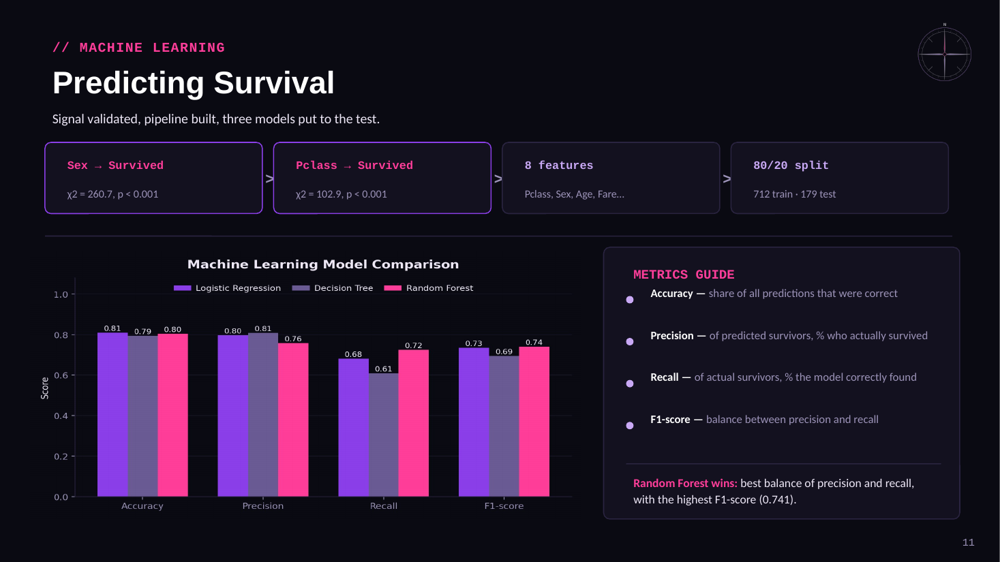

NOTEBOOK
PYTHON

images/python-code.png missing
Titanic Survival — Python
Cleaned the data first: dropped Cabin at 77% missing, imputed Age with medians split by gender since the distributions differ, filled Embarked with the mode. Ran chi-square tests to confirm Sex and Pclass were actually signal, then trained logistic regression, a decision tree, and a random forest on an 80/20 split. Random forest took it on F1.